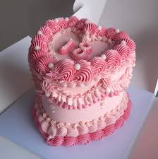
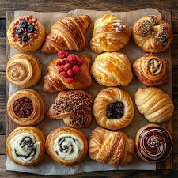

Step into Honey & Crumble, where the golden warmth of freshly baked bread mingles with the sweet aroma of buttery croissants and decadent pastries. Every morning at dawn, our master bakers lovingly craft each loaf, roll every croissant by hand, and drizzle our signature honey glaze over crumbly scones that melt in your mouth. From the moment you walk through our doors, you'll be embraced by the irresistible scent of cinnamon, vanilla, and caramelized sugar – a symphony of flavors that transforms ordinary moments into extraordinary memories. Here, every bite tells a story of tradition, passion, and the simple joy of sharing something truly delicious with the people you love.
Our Best Sellers:

Artisan Bread
Wake up to the aroma of authentic artisan breads, baked fresh every morning in our traditional stone oven. Each loaf is hand-shaped using organic flour and our 15-year-old sourdough starter.

Custom Cakes
Transform your special moments into sweet memories with our handcrafted custom cakes. From intimate birthdays to grand weddings, our pastry chef creates edible masterpieces that taste as amazing as they look.

Pastries
Start your day with the buttery, flaky perfection of our handcrafted pastries. Made with real butter and rolled by hand using traditional French methods, each pastry is a golden, delicate work of art.